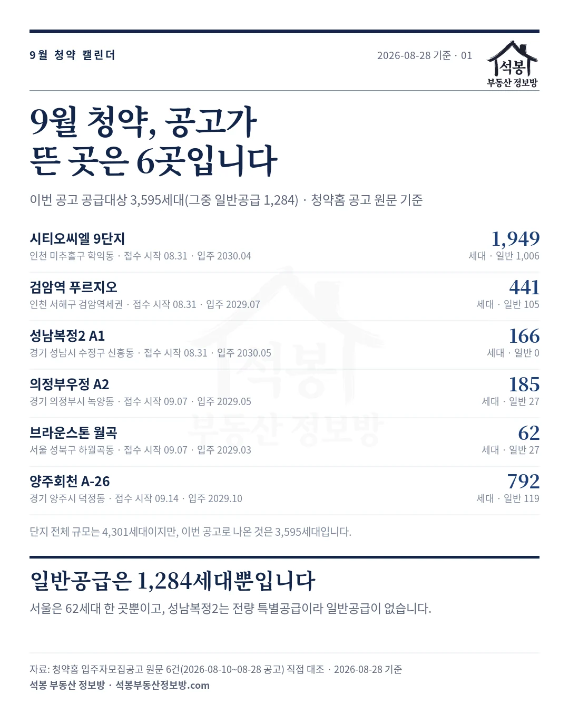
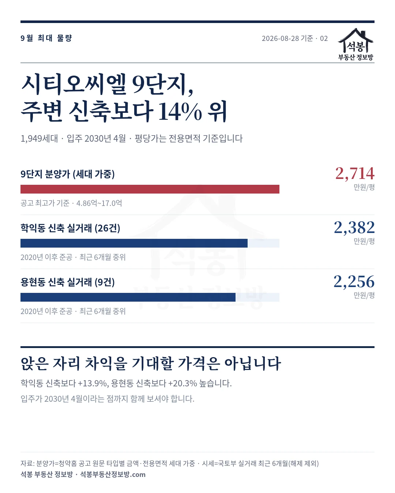
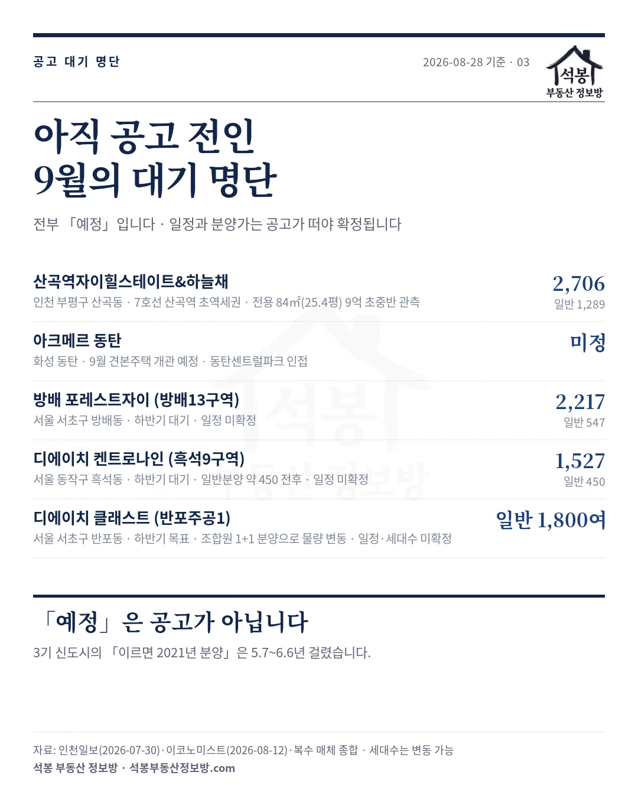
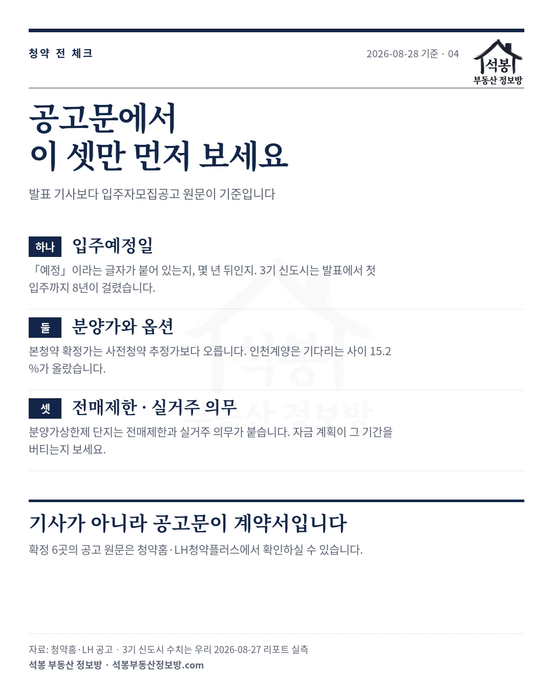

9월에 수도권을 중심으로 약 1만 3천 가구가 분양된다는 기사가 나옵니다. 맞는 말이지만, 입주자모집공고가 실제로 뜬 곳은 2026년 8월 28일 기준 6곳이고, 그 공고로 나온 물량은 3,595세대, 그중 일반공급은 1,284세대입니다. 그중 서울은 62세대짜리 한 곳뿐입니다. 나머지는 전부 「예정」이고, 예정은 밀립니다. 이 글의 숫자는 기사가 아니라 청약홈 입주자모집공고 원문 6건을 직접 열어 옮긴 것입니다.
하나. 확정 6곳: 8월 31일부터 9월 14일까지 세 차례로 나뉩니다
저희가 매일 수집하는 청약홈·LH 공고 기준으로, 지금 공고문이 나와 있는 곳은 이렇습니다.
| 단지 | 위치 | 이번 공고 공급대상 | 일반공급 | 청약 접수 | 입주예정 |
|---|---|---|---|---|---|
| 시티오씨엘 9단지 오션파크뷰 | 인천 미추홀구 학익동 | 1,949 | 1,006 | 특별 8월 31일 1순위 9월 1일 2순위 9월 2일 | 2030년 4월 |
| 검암역 푸르지오 프라베뉴 | 인천 서해구 검암역세권 | 441 | 105 | 특별 8월 31일 1순위 9월 1일 2순위 9월 2일 | 2029년 7월 |
| 성남복정2 A1 신혼희망타운 | 경기 성남시 수정구 신흥동 | 166 | 0 | 1순위 8월 31일~9월 4일 2순위 9월 7일~8일 | 2030년 5월 |
| 의정부우정 A2 | 경기 의정부시 녹양동 | 185 | 27 | 1순위 9월 7일~15일 2순위 9월 16일~17일 | 2029년 5월 |
| 브라운스톤 월곡 센트럴 | 서울 성북구 하월곡동 | 62 | 27 | 특별 9월 7일 1순위 9월 8일~9일 2순위 9월 10일 | 2029년 3월 |
| 양주회천 A-26 | 경기 양주시 덕정동 | 792 | 119 | 1순위 9월 14일~15일 2순위 9월 16일~17일 | 2029년 10월 |
접수가 세 차례로 나뉩니다. 셋은 8월 31일 월요일, 의정부우정과 브라운스톤 월곡은 9월 7일, 양주회천은 9월 14일입니다. 8월 31일 접수분을 보고 계신다면 검토 시간은 사실상 8월 29일~30일 주말뿐입니다. 양주회천 A-26은 8월 27일, 브라운스톤 월곡 센트럴은 8월 28일에 공고가 떠서 이번 캘린더에 추가됐습니다. 브라운스톤 월곡은 1순위가 해당지역 9월 8일, 기타지역 9월 9일로 하루 갈리니 날짜를 헷갈리지 마세요.
표에서 꼭 보셔야 할 칸은 일반공급입니다. 여섯 단지의 전체 규모를 더하면 4,301세대이지만 이번 공고로 나온 것은 3,595세대이고, 가점·순위로 다투는 일반공급은 1,284세대뿐입니다. 성남복정2 A1은 이번 공고가 전량 특별공급이라 일반공급이 아예 없고(신혼희망타운), 의정부우정 A2는 185세대 중 27세대, 양주회천 A-26은 792세대 중 119세대만 일반공급입니다. 「9월에 몇 천 세대」라는 말과 실제로 내가 넣을 수 있는 물량은 이만큼 다릅니다.
서울만 따로 보면 더 얇습니다. 공고가 뜬 서울 단지는 하월곡동 브라운스톤 월곡 센트럴 하나이고, 소규모재건축이라 전체가 62세대, 일반공급은 27세대입니다. 투기과열지구·청약과열지역이라 가점 경쟁도 셉니다. 분양가는 전용 59.93㎡(18.1평) 8억 6,200만원부터 74.96㎡(22.7평) 10억 7,500만원까지입니다.
가장 큰 물량은 시티오씨엘 9단지로, 이번 공고분의 절반이 넘습니다. 분양가가 적정한지는 다음 절에서 실거래와 맞대 봤습니다.

가입하시면 지역 시장조사 보고서(약식)를 2회 무료로 요청하실 수 있습니다.
둘. 최대 물량 시티오씨엘 9단지: 분양가가 주변 신축보다 14% 위
이번 공고분의 절반이 넘는 물량이 시티오씨엘 9단지 한 곳입니다. 그래서 공고문의 주택형별 공급금액과 전용면적을 그대로 받아, 세대수로 가중해 평당가를 냈습니다. 9단지 분양가는 전용 59.98㎡(18.1평) 4억 8,560만원부터 136.29㎡(41.2평) 17억원까지이고, 세대 가중 평균은 평당(전용) 2,714만원입니다.
| 구분 | 평당가(전용) | 비고 |
|---|---|---|
| 시티오씨엘 9단지 분양가 (세대 가중) | 2,714만원 | 공고 원문 최고가 기준 · 4.86억~17.0억 |
| 학익동 신축 실거래 (26건) | 2,382만원 | 2020년 이후 준공 · 최근 6개월 중위 |
| 용현동 신축 실거래 (9건) | 2,256만원 | 2020년 이후 준공 · 최근 6개월 중위 |
학익동 신축 실거래보다 +13.9%, 용현동 신축보다 +20.3% 높습니다. 앉은 자리 차익을 기대하고 넣는 청약은 아니라는 뜻입니다. 대신 최고층 신축이라는 프리미엄과 수인분당선 학익역(2028년 개통 목표), 37만㎡(11.2만 평) 그랜드파크 조성 계획을 얼마로 평가하느냐의 선택이 됩니다. 입주가 2030년 4월이라 계약부터 입주까지 3년 반이 남았다는 점도 함께 보셔야 합니다. 같은 브랜드의 기존 시티오씨엘 1단지는 최근 6개월 거래가 1건뿐이라 비교 기준으로 쓰지 않았습니다.
참고로 확정 6곳 중 사연이 가장 긴 곳은 성남복정2 A1입니다. 2021년 사전청약 단지인데 본청약 예정일이 원래 2023년 5월 15일이었다가, 지구에서 법정 보호종 맹꽁이가 발견되고 주민 이주가 늦어지며 밀리고 밀려 2026년 8월 31일, 예정일보다 3.3년 늦게 접수를 시작합니다. 입주는 2030년 5월 예정이니 사전청약 당첨자 기준으로는 9년을 기다리는 셈입니다. 저희가 2026년 8월 27일에 게시한 3기 신도시 리포트의 결론 그대로, 「예정」이 붙은 일정은 계획이지 약속이 아닙니다. 이 캘린더가 공고가 뜬 것만 확정으로 센 이유입니다.

셋. 대기 명단: 공고를 기다리는 큰 이름들
「9월 1만 3천 가구」의 몸통은 이쪽입니다. 전부 공고 전이라 일정과 분양가는 확정이 아닙니다.
| 단지 (구역) | 위치 | 총세대 | 일반분양 | 상태 |
|---|---|---|---|---|
| 산곡역자이힐스테이트&하늘채 | 인천 부평구 산곡동 | 2,706 | 1,289 | 공고 대기 · 전용 84㎡(25.4평) 9억 초중반 관측 |
| 아크메르 동탄 | 화성 동탄 | 미정 | 9월 견본주택 개관 예정 | |
| 방배 포레스트자이 (방배13) | 서울 서초구 방배동 | 2,217 | 547 | 하반기 대기 · 일정 미확정 |
| 디에이치 켄트로나인 (흑석9) | 서울 동작구 흑석동 | 1,527 | 약 450 | 하반기 대기 · 일정 미확정 |
| 디에이치 클래스트 (반포주공1) | 서울 서초구 반포동 | ― | 1,800여 | 하반기 목표 · 조합원 1+1 분양으로 물량 변동 중 |
디에이치 클래스트는 공고가 뜨는 순간 하반기 청약판의 주인공이 될 물량입니다. 다만 일반분양 규모부터 아직 유동적입니다. 조합원 1+1 분양이 늘면서 당초 최대 2,500가구까지 보던 전망이 1,800가구 안팎으로 줄었고, 매체마다 숫자가 다릅니다. 일정도 분양가도 확정된 게 없으니 지금 할 일은 기사 스크랩이 아니라 청약 통장·가점·자금 요건을 미리 점검해 두는 것입니다. 12월에는 인천 부평 갈산1구역 재개발(1,137세대)도 분양 채비에 들어갑니다.
확정·대기 단지의 주변 시세는 저희 지도에서 바로 보실 수 있습니다. 학익동(시티오씨엘), 산곡동(산곡역자이 예정지), 방배동(포레스트자이·르엘), 흑석동(켄트로나인)입니다.

넷. 공고문에서 이 셋만 먼저 보세요
첫째, 입주예정일입니다. 이번 6곳의 입주예정월은 2029년 3월부터 2030년 5월까지, 계약 시점에서 3년 안팎이 남았습니다. 3기 신도시는 발표에서 첫 입주까지 8년이 걸렸고 성남복정2 본청약은 예정일보다 3.3년 늦었습니다. 그 시간 동안 전세를 어떻게 이어갈지가 실제 계획의 절반입니다.
둘째, 분양가와 옵션입니다. 사전청약 단지의 본청약 확정가는 추정가보다 오릅니다. 인천계양은 기다리는 사이 전용 59㎡(17.8평) 분양가가 15.2% 올랐습니다. 발코니 확장 등 옵션 비용이 별도인지도 공고문 뒤쪽 표에서 확인하세요.
셋째, 전매제한과 실거주 의무입니다. 분양가상한제 단지는 당첨자 발표일부터 전매제한과 실거주 의무가 붙습니다. 자금 계획이 그 기간을 버티는지가 청약 버튼을 누르기 전 마지막 질문입니다.

기사가 아니라 공고문이 계약서입니다
발표 기사와 공고문 사이에는 이번에 본 것처럼 몇 달에서 몇 년의 거리가 있습니다. 확정 6곳의 공고 원문은 청약홈과 LH청약플러스에서 열람하실 수 있고, 저희 실거래지도의 청약 캘린더는 공고가 뜨는 대로 매일 갱신됩니다. 대기 명단의 큰 이름들이 공고를 내는 날, 이 캘린더에서 다시 정리해 드리겠습니다.
원자료: 청약홈 입주자모집공고 원문 6건 직접 열람(성남복정2 A1 2026년 8월 10일, 시티오씨엘 9단지·검암역 푸르지오 8월 21일, 의정부우정 A2 8월 26일, 양주회천 A-26 8월 27일, 브라운스톤 월곡 센트럴 8월 28일). 세대수는 공고문의 공급대상 기준이며 단지 전체 규모(4,301세대)와 다릅니다 · 같은 날 공고된 울산 문수데시앙2단지는 수도권 밖이고 준공 단지의 공가세대 재공급이라 제외했습니다 · 기준일 2026년 8월 28일
평당가는 공고문 주택형별 공급금액(최고가 기준)과 전용면적을 세대수로 가중한 값, 비교 시세는 국토부 실거래 최근 6개월(해제 제외, 2020년 이후 준공) 중위입니다
대기 단지는 한국경제·인천일보·이코노미스트·서울경제 등 복수 보도 종합이라 세대수·분양가·일정이 변동될 수 있습니다. 반포주공1 일반분양은 매체마다 달라 확정치로 쓰지 않았습니다 · 성남복정2 지연 경위는 비즈워치(2024년 4월 19일)와 공고 대조
편집·제작: 석봉 부동산 정보방 · 투자 권유가 아닙니다.